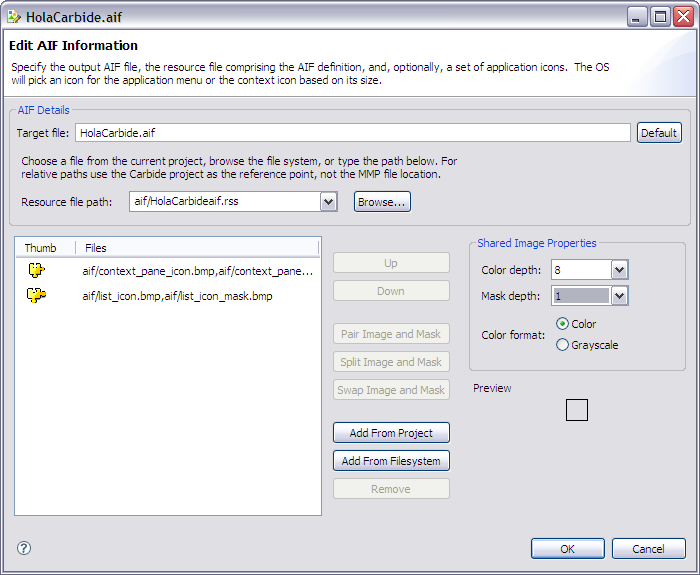

The AIF Editor allows you to specify the Symbian OS resource file and bitmaps that should be included in a Symbian OS application information (AIF) file. Use of AIF files is restricted to using .bmp files and works for versions 2.x and later releases of the Symbian OS SDKs. For more information, see AIF File.
The AIF Editor is shown when a new AIF file is created or an existing file is edited in the Resources group of the MMP editor's Sources tab. Refer to Creating an AIF File for more information.

| Item | Explanation |
|---|---|
| Target File | Specifies the filename of the compiled AIF file, relative to the target path. Click the untitled.aif button to set the target file based on the SDK and project name. |
| Resource File Path | Choose a resource file from the current project, browse the file system or enter the path. For relative paths use the Carbide project as the reference point, not the MMP file location. |
| Up | Select an image in the list and click Up to move the selection one position up in the list. |
| Down | Select an image in the list and click Down to move the selection one position down in the list. |
| Pair Image and Mask | Select two adjacent unpaired BMP image entries in the list and click this button to combine the images together into image/mask pairs. |
| Split Image and Mask | Select a paired BMP image in the list and click this button to split the image into image and mask entries. |
| Swap Image and Mask | Select a paired BMP image in the list and click this button to swap the image and mask files and format information in paired image entries. |
| Add From Project | Click this button to open an Add Images from Project dialog to reference available images in the project. |
| Add From Filesystem | Click this button to open an Add Images From Filesystem dialog to locate and reference existing images in the filesystem or copy images to the project. |
| Remove | Select an image and click Remove to remove image entry from the list. This does not delete file from directory. |
| Color depth | Select the bit depth used to encode the image at build time. |
| Mask depth | Select the bit depth used to encode the mask at build time. Options include:
|
| Color format | Select Color to encode the image(s) as color or select Grayscale to encode the image(s) as grayscale. |
| Preview | A preview of the image as it will appear at runtime. |